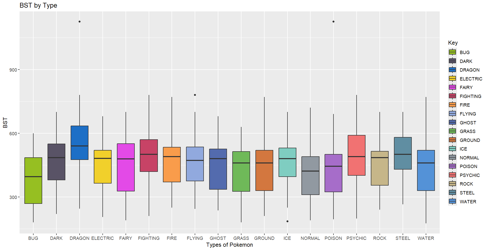
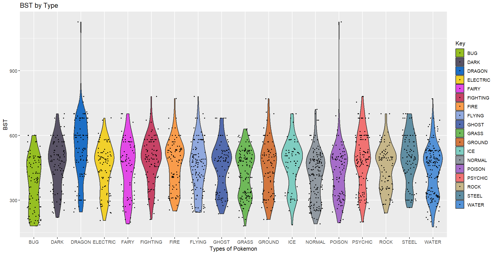

Assignment 1
For this assignment, we were tasked with finding a data set and creating 3 data visualizations with it
This dataset provides data for all 1025 Pokemon and their different forms. Some of the Pokemon get forms that either increase or decrease one of their stats. The first chart provides insight into a Pokemon's BST, which is a Pokemon's HP (health points), Attack, Defense, Special Attack, Special Defense, and Speed.
The Bar Chart

The bar chart shows the highest and lowest BST for each type. The data also shows a NONE option and that is because there are Pokemon who do not have a secondary type. However, the chart doesn't really give us much to work with. If anyone is to take something away from this, its that Dragon and Poison have a Pokemon with a really high BST.
The Ridgline Plot

The ridgeline plot shows a better distribution of values. Showing that some types like Bug and Normal have a higher density towards the lower end of the BST spectrum and thus, may not be as good as a Dragon or Steel type. Also, I have added color that each type is represented by in the game. However, what this is best at showing us is the average Pokemon ends up at around 500 BST when fully evolved.
The Boxplot
The Boxplot is near perfect, providing a look at the echelons of each type and their BST, while conveying it very clearly to the reader,and yet it could be better. It doesn't show the density of the BST's. However, we have one more chart that combines the density idea of the ridgeplot and the look of the box plot.
The Violin Plot
The Violin Plot is a perfect combination of the two previous plots. It shows density of the BST's like the ridge plot while keeping the style of a box plot. This also has all the points in each of the types with the jitter plot. The jitter plot is just to show where the points are at, and I tried to make the points interactive, R was giving me a difficult time, so i decided to just use the points on their own.
Conclusion
I believe all the plots have their own strengths and weaknesses, and while they may not all be perfect, each plot has their own uniqueness that can make or break a data visualization